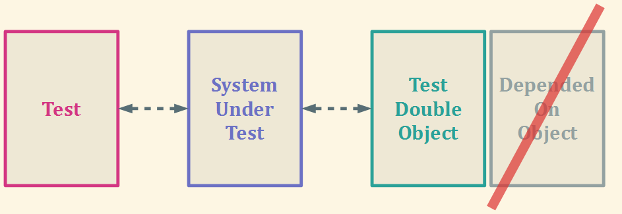
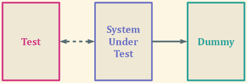
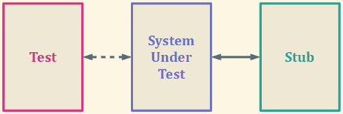
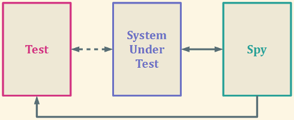
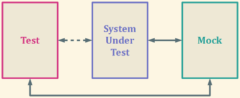

risorse | test double
Verificare un sistema software può risultare complicato quando si rende necessario accedere a risorse di difficile reperibilità. Una possibile soluzione consiste nel sostituire tali risorse con oggetti temporanei che ne emulino il comportamento.
Il test double (noto anche con il nome di imposter), è un artefatto che per convenienza sostituisce un componente utilizzato dal sistema sotto verifica.
Esistono diverse tipologie di test double:
Un oggetto dummy è un oggetto che non viene utilizzato, la cui presenza è tuttavia richiesta per il completamento della verifica; tipico il caso di un parametro di funzione che non viene chiamato in gioco durante il test la cui assenza causa però un errore:
Uno stub fornisce risposte cablate per causare particolari comportamenti del sistema sotto verifica, per i soli casi previsti dalle procedure di test:
È uno stub che in più registra le chiamate effettuate dall'oggetto sotto test per permettere di verificare a posteriori la corretta comunicazione con il componente originale:
È un oggetto che sostituisce il componente originale per ragioni che esulano dalla verifica del buon funzionamento del sistema (per esempio per questioni di praticità o di efficienza).
È uno stub che verifica l'ordine e la natura delle chiamate effettuate dal sistema sotto verifica:
La differenza tra test stub/spy e mock object è sostanziale: mentre i primi consentono di verificare lo stato del sistema (in virtù del fatto che l'esito della verifica viene determinato solo al termine dell'interazione tra il sistema e il test double), i secondi ne verificano il funzionamento, essendo in grado di stabilire l'esito della verifica durante lo svolgimento dell'interazione stessa.
Pagina modificata l'8/11/2011